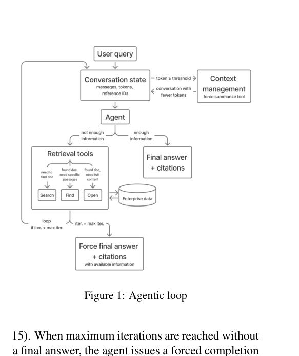
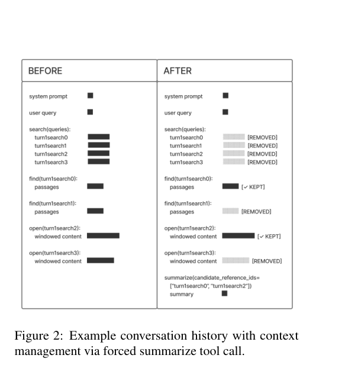
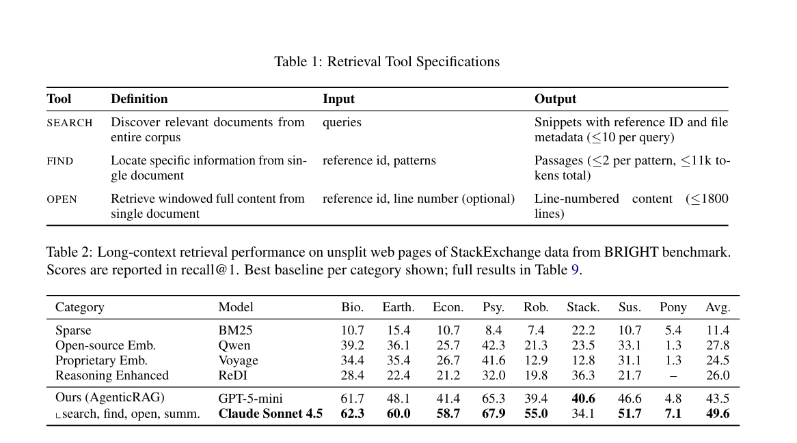
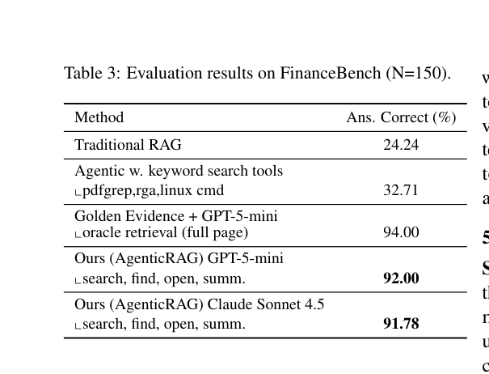
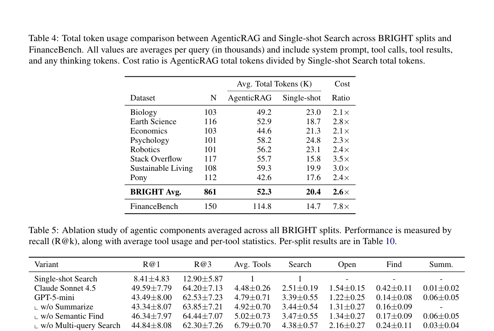

01 · TL;DR
一句话读懂 AgenticRAG
让推理模型先搜索候选文档，再在文档内 find、按行 open，并在上下文接近上限时 summarize；检索从一次 top-k 变成“发现 → 阅读 → 补搜 → 引证”的有界循环。论文最强证据不是某个新 retriever，而是 single-shot 到 agentic tool use 带来的 5.9 倍 Recall@1。
49.6%
BRIGHT Recall@1Claude Sonnet 4.5，较最佳 embedding baseline 高 21.8 个百分点。0.96
WixQA factualityGPT-5-mini，在 Expert Written 上较 E5 的 0.85 相对提升 13%。92%
FinanceBench 正确率距提供真实证据页面的 94% oracle 仅差 2 个百分点。02 · MOTIVATION
它把 RAG 的责任边界重新分配了
标准 RAG搜索系统一次性决定候选集，LLM 只能在固定 top-k 内生成。第一阶段漏掉的证据，后面无法恢复。
AgenticRAG底层搜索只负责快速发现；推理模型可以改写查询、进入文档、定位段落、读取更多窗口并决定是否继续。
企业问题经常是“先找到正确文件，再理解文件结构，最后跨文件拼证据”。把 grounding 全压给向量召回，相当于要求一次检索同时猜中三个阶段。
论文没有提出新的 embedding 或索引算法。它的贡献是一个可覆盖现有企业搜索基础设施的轻量 Harness，以及围绕真实部署形成的工具协议和上下文策略。
03 · AGENTIC LOOP
有界状态机，而不是无限自主 Agent
DISCOVER
搜索与定位
Agent 选择 search/find/open，并把工具结果加入 conversation state。→
DECIDE
证据是否足够
足够则回答并附引用；不足则根据已知实体继续调用工具。→
BOUND
预算约束
默认最多 15 轮；到上限强制基于现有证据完成回答。
while iteration < 15: Agent(state) → tool_call | final_answer; overflow → summarize(state)
04 · RETRIEVAL TOOLS
Search、Find、Open 是三种不同粒度的动作
Search：跨库发现一次工具调用最多并行发出 5 个改写查询，每个查询最多返回 10 个 snippet，并去重后分配 reference ID。
Find：文档内定位对指定 reference ID 做关键词或可选语义匹配；每个 pattern 最多 2 段，总结果约束在 11K token。
Open：按窗口阅读从指定行号读取全文窗口，默认最多 1800 行；结果带总行数，Agent 可继续跳到其他位置。
| 工具 | 搜索空间 | Agent 已知什么时使用 | 主要输出 |
|---|---|---|---|
| search | 整个企业语料 | 只知道问题主题 | snippet + 元数据 + reference ID |
| find | 单个候选文档 | 知道要找的实体或指标 | 匹配 passage |
| open | 单文档指定窗口 | 知道应读哪个位置或需要上下文 | 带行号全文 |
reference ID 是协议核心：它把“搜索结果中的候选文件”变成后续 find/open 可寻址的对象，也让最终答案能回指证据。
05 · CONTEXT MANAGEMENT
Summarize 不是普通摘要，而是上下文垃圾回收
每次 find/open 可能带回约 11K token。系统按 128K token 阈值监控 conversation：达到 90% 时发内部预警，达到上限时强制调用 summarize。Agent 记录当前推理状态并标记要保留的 reference ID，系统随后删除未被保留的旧工具结果。

保留的是“推理状态 + 证据句柄”不是把所有历史压成一段不可寻址的摘要；reference ID 仍可继续 open/find。
风险是摘要损失如果 Agent 错删候选引用，后续可能重复搜索或永久丢失反例，论文对压缩忠实度评估较少。
06 · RESULTS
三组任务分别验证“找文档、跨文档回答、长财报推理”

| 数据集 | 任务 | 最佳结果 | 关键对比 |
|---|---|---|---|
| BRIGHT | 从 5.65K 篇、平均 16K token 长文档中找相关文档 | 49.6% R@1 | Qwen embedding 27.8% |
| WixQA Expert | 跨文档支持与排障回答 | 0.96 factuality | E5 0.85；BM25 0.83 |
| FinanceBench | 84 份平均约 116K token 财务文档问答 | 92.0% correct | 传统 RAG 24.24%；oracle 94% |

07 · COST
质量提升很大，token 账单也很真实
52.3K
BRIGHT 平均 tokensingle-shot 为 20.4K，AgenticRAG 约 2.6 倍。114.8K
FinanceBench 平均 tokensingle-shot 为 14.7K，成本比例达到 7.8 倍。4.48–4.79
平均工具调用数远低于 15 轮上限，说明多数任务不需要跑满循环。BRIGHT 上 Claude AgenticRAG 的 Recall@1 是 single-shot search 的约 5.9 倍，而 token 是 2.6 倍；质量增幅大于 token 增幅。但 FinanceBench 需要深读长文件，成本比明显恶化，不能只拿平均准确率做上线决策。
生产判断应按问题路由：简单查事实走普通 RAG，复杂、多意图、需要长文导航的问题才进入 AgenticRAG。论文本身也把 switcher 视为关键部署经验。
08 · ABLATION
最大的增益来自“允许多轮工具使用”

01
Single-shot 8.41% → Claude Agent 49.59%。这是全文最强消融，说明循环本身比任何单个附加组件重要。
02
去掉 summarize 几乎不降 BRIGHT 分数。因为平均工具轮次不高，BRIGHT 很少触发极限上下文；这不能证明 summarize 对超长财报无用。
03
去掉 semantic find 反而从 43.49 升到 46.34。语义 find 不是稳定贡献项，可能引入噪声或与 search/open 重叠。
04
单查询搜索分数相近，但调用从 4.79 增至 6.79。multi-query 的主要价值是减少循环次数，不是直接提高 Recall@1。
09 · PRE-PRODUCTION
论文里最像“踩坑总结”的四条设计
搜索结果必须带元数据title、filename、file type 能帮助模型区分内容相似但来源不同的 snippet，并减少重复搜索。
文档预览必须有行号让 Agent 能锚定表格或章节，在下一次 open 时直接跳转，而不是重新读开头。
压缩后保留候选引用摘要不能只留自然语言结论，还要保留 reference ID，才能继续深入 promising candidate。
复杂度路由优先简单查询走传统 RAG 保持时延与成本；多意图问题才进入深度 Agent Harness。
10 · CRITICAL READING
这篇论文最需要谨慎解读的地方
A
底层企业搜索是闭源组件。论文强调 Harness 可叠加现有搜索栈，但读者无法完整复现其 snippet 质量、排序与权限行为。
B
强模型既是能力也是成本。GPT-5-mini 和 Claude Sonnet 4.5 的工具规划能力可能显著高于本地小模型，结果不能直接迁移。
C
Recall@1 排名由模型自报相关性诱导。Agent 在最终答案中为引用打相关分，再据此形成排序；这与标准 retriever 独立打分并不完全同构。
D
WixQA factuality 使用 LLM judge。0.96 是自动评估分数，不等于人工核查后的 96% 无错误答案。
E
广覆盖多证据仍是弱项。Pony 每题平均约 6.9 个 gold 文档，深度优先导航容易找到少数强证据，却漏掉并列相关文档。
11 · PRACTICAL RECIPE
实现一个可用的企业 AgenticRAG，先做什么？
1. 工具语义保持正交search 发现、find 定位、open 阅读，不要三个工具都返回相同 top-k chunk。
2. 统一 reference ID搜索、阅读、摘要和最终引用都围绕稳定 ID 传递，避免 Agent 复制整篇文档。
3. 所有循环都设硬预算限制轮数、单次结果、总 token、总时延与总费用；到上限明确降级策略。
4. 压缩时保留证据血缘摘要应记录已确认事实、未解决问题和保留引用，不能只写一段泛化总结。
5. 做复杂度分类路由单事实查询走一次检索；跨文件比较、长表格与多意图问题才启用 Agent。
6. 同时评估质量与成本记录每题工具轨迹、token、延迟、引用覆盖和失败原因，不只看最终正确率。
最终评价：AgenticRAG 的贡献不是证明“Agent 永远优于 RAG”，而是给出一个实用边界：当问题需要先找文档、再在文档中导航时，搜索栈负责候选发现，推理模型负责动态取证，比把全部希望寄托在一次向量召回上更可靠。